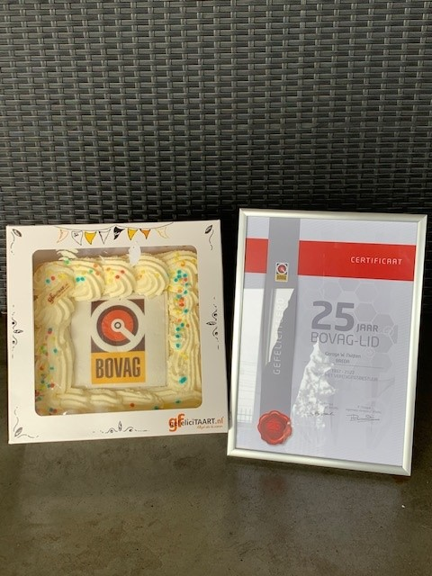
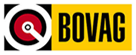

Garagebedrijf Nuijten viert een bijzonder jubileum: het autobedrijf is 25 jaar aangesloten bij BOVAG. Wim Nuijten ontving uit handen van BOVAG-adviseur Remco van Rijn een speciale oorkonde.
Uw auto kan hier ook terecht voor BOVAG Pechhulp. Het bedrijf is RDW-erkend.